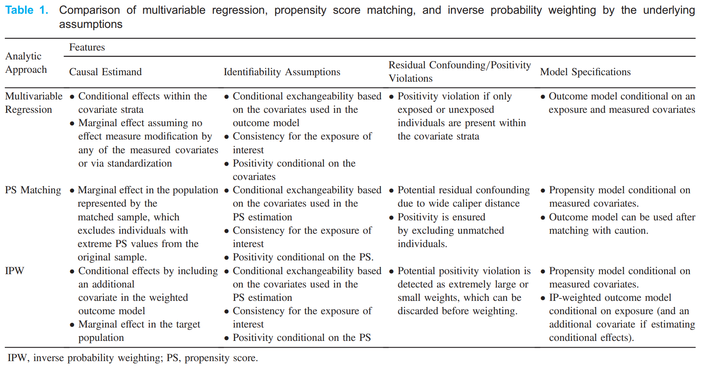
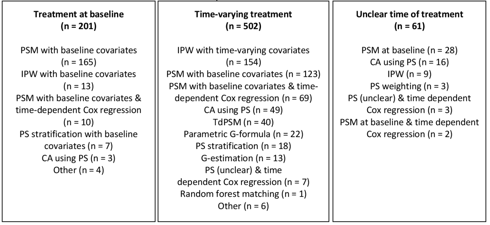

Overview#
This page describes how to design a causal inference study, and provides a brief overview of the possible methods you could use within your study.
The gold standard method for inferring causality is randomisation - e.g. randomising patients to receive a treatment or not. This is because it removes confounding - it removes the common cause of the treatment and outcome, since the only cause of treatment was randomisation.[HarvardX PH559x] When we are using observational data, there are a variety of possible methods for causal effect estimation.
Identifying the focus of the research#
The first step will be to clearly specify your research question. You can do so using the counterfactuals approach, directed acyclic graphs, or structural equation models. When you do this, you need to identify a single exposure and outcome, for which you want to estimate a causal effect. The exposure is a variable that can take one of several counterfactual values. It will often be a treatment or intervention.[Igelström et al. 2022]
You cannot be focussed on the relationship of several different variables with the outcome! This is because we design our study around identifying the true causal relationship between those two variables, but any other variables included in modelling or so on will still be vulnerable to residual confounding or biases, as we haven’t designed the study around them. The reporting of the relationships of those other variables with the outcome is known as Table 2 fallacy.[Lederer et al. 2018]
Methods for causal effect estimation using observational data#
All of these methods are attempting to achieve one thing: the careful control of confounders in such a way that you have more confidene that the association between two variables is likely to be true.
Methods for causal inference include:
Inclusion of confounders as covariates in the model.
Also known as covariate adjustment.
Seperate participants based on their values of the confounder.
Also known as principal stratification.
Create same distribution of confounders in treated and untreated groups.
Weight each individual by the inverse of their probability of receiving their actual treatment, resulting in equal distribution of confounders in the treated and untreated groups.
Also known as inverse probability weighting (IPW) and propensity score weighting.
Weight observations using IPTW, then use weights when estimate association between treatment and outcome
Also known as MSM with weights estimated using IPTW, and IPTW with time-varying covariates
Predict outcomes in counterfactual populations that assume all had treatment or not, and compare.
Also known as parametric G-formula, G-standardisation, standardisation or outcome regression.
Work back in time, predicting counterfactual outcome (with parameters estimated using G-estimation) at each time point, given no exposure from that time point onwards, controlling for treatment and confounders prior to that point
Mostly refers to G-estimation of structural nested models (SNM).
IV cause variation in treatment, but are unrelated to outcome and therefore unrelated to unmeasured confounders. Randomisation is an example of an IV. You can then use two-stage least squares to estimate causal effect (regress exposure on instrumental variable to get estimate of exposure independent of confounders, then regress outcome on that estimate).
Can use RDD when exposure status is determined by a continuous variable exceeding an arbitrary threshold. We look at individuals who fall just above and below the threshold. We expect the relationship between that variable and the outcome to be continuous (i.e. they’re a similar group with similar values of variable, who would’ve otherwise expect to have similar outcomes if no exposure/treatment was triggered). Therefore, any discontinuity/jump in that relationship indicates a causal relationship with the exposure. “If you see a turtle on a fencepost, you know he didn’t get there by himself”.
Compare change over time in a continuous population-level outcome before and after an exposure is introduced. Assuming the trend would have been unchanged without the exposure, a change in trend at point of introduction can be attributed to the exposure
Compare change over time in a continuous population-level outcome between a group that becomes exposed/treated, and a group that does not
Comparing methods#
When choosing methods, there are a few different things to consider.
Treatment-confounder feedback and unobserved confounding#
Methods are often grouped into the following three categories - with choice of method depending on whether you have treatment-confounder feedback or unobserved confounding.[Igelström et al. 2022]
Group |
Methods |
Comments |
|---|---|---|
Conventional methods - most common methods which focus on conditioning on some set of common causes of the exposure and outcome[Hernán and Robins 2024] |
• Multivariable regression |
• Generally only work in simpler settings - can’t handle time-varying treatments (such as is the case for complex longitudinal data).[Hernán and Robins 2024] - except for inverse probability of treatment weighting (see marginal structural models) |
G-methods (“generalised”) address intermediate confounding i.e. treatment-confounder feedback |
• G-computation |
• Developed by James Robins[source] |
Methods that address unobserved confounding |
• Instrumental variables |
• These methods work ‘by exploiting some assignment mechanism (akin to randomisation in an RCT) that determines exposure status but is thought to be unrelated to any unobserved confounders.’ [Igelström et al. 2022] |
It is important that you do not adjust for time-varying confounders using conventional methods. ‘Adjusting for time-dependent confounders using conventional methods, such as time-dependent Cox regression, often fails in these circumstances, as adjusting for time-dependent confounders affected by past exposure (i.e. in the role of mediator) may inappropriately block the effect of the past exposure on the outcome (i.e. overadjustment bias). For example, we wish to determine the effect of blood pressure measured over time (as our time-varying exposure) on the risk of end-stage kidney disease (ESKD) (outcome of interest), adjusted for eGFR measured over time (time-dependent confounder). As eGFR acts as both a mediator in the pathway between previous blood pressure measurement and ESKD risk, as well as a true time-dependent confounder in the association between blood pressure and ESKD, simply adding eGFR to the model will both correct for the confounding effect of eGFR as well as bias the effect of blood pressure on ESKD risk (i.e. inappropriately block the effect of previous blood pressure measurements on ESKD risk).’ [Chesnaye et al. 2022]
Assumptions#
Different methods have different causal assumptions - see the page on assumptions for a description of these, and see individual method sections for the assumptions of that method.
This example compares assupmtions of some of the conventional methods, and is taken from [Shiba and Kawahara 2021].

The conventional and G-methods assume these is no unmeasured confounding (i.e. conditional exchangeability). However, this is often not plausible in observational study designs - hence the benefit of the methods that address unmeasured confounding.[Igelström et al. 2022]
Causal estimand & conditional/marginal effects#
It is important when choosing a method to have a clear causal estimand - considerations include:
Target population
Whether estimating conditional or marginal effect
Outcome type
Whether the effect measure is non-collapsible or collapsible
Refer to the page on causal estimands for more details.
With regards to conditional (relevant to whole population) and marginal effects (specific to certain population):
Estimate conditional effects: Stratification, regression [Vansteelandt and Keiding 2011]
Estimate marginal effects: G-methods [Igelström et al. 2022]
What methods are typically used?#
Wijn et al. 2022 conducted a mapping literature review to determine which confounding adjustment methods were used in longitudinal observational data to estimate a treatment effect. They identified the following studies:

Abbreviations: CA, covariate adjustment; IPW, inverse probability weighting; PS, propensity score; PSM, propensity score matching; TdPSM, time-dependent propensity score matching.
You can see that in the context of longitudinal observational data
66% time-varying treatment, 26% treatment at baseline, 8% time of treatment not clearly defined
For treatment at baseline, majority of papers use propensity score matching with baseline covariates (82%)
For time-varying treatment:
30% inverse probability weighting
25% propensity score matching with baseline coavariates
14% propensity score matching with baseline covariates combined with time-dependent Cox regression
10% covariate adjustment using propensity score
8% time-dependent propensity score
4% parametric G-formula
2% propensity score stratification
3% G-estimation
Hence, for time-varying treatment, often inappropriate methods are use - 25% used probability score matching with baseline covariates ‘which can potentially result in a biased treatment effect’ - and only 45% of the papers used g-methods. [Wijn et al. 2022]
Other reviews include -
2019 systematic review of studies adjusting for time-dependent confounding, finds inverse probability of treatment weighting estimated marginal structure models to be the most common technique [Clare et al. 2019]
Reporting guidelines#
There are currently guidelines in development…
Prediction of Counterfactuals Guideline (PRECOG): ‘While there are guidelines for reporting on observational studies (eg, Strengthening the Reporting of Observational Studies in Epidemiology, Reporting of Studies Conducted Using Observational Routinely Collected Health Data Statement), estimation of causal effects from both observational data and randomised experiments (eg, A Guideline for Reporting Mediation Analyses of Randomised Trials and Observational Studies, Consolidated Standards of Reporting Trials, PATH) and on prediction modelling (eg, Transparent Reporting of a multivariable prediction model for Individual Prognosis or Diagnosis), none is purposely made for deriving and validating models from observational data to predict counterfactuals for individuals on one or more possible interventions, on the basis of given (or inferred) causal structures.’. A 2022 protocol proposes to draw up reporting guidelines for such studies. [Xu et al. 2022]
TrAnsparent ReportinG of observational studies Emulating a Target trial (TARGET) guideline: ‘Observational studies are increasingly used to inform health decision-making when randomised trials are not feasible, ethical or timely. The target trial approach provides a framework to help minimise common biases in observational studies that aim to estimate the causal effect of interventions. Incomplete reporting of studies using the target trial framework limits the ability for clinicians, researchers, patients and other decision-makers to appraise, synthesise and interpret findings to inform clinical and public health practice and policy. This paper describes the methods that we will use to develop the TrAnsparent ReportinG of observational studies Emulating a Target trial (TARGET) reporting guideline.’ [Hansford et al. 2023]
Related: Systematic review demonstrating inconsistencies in reporting of target trials - [Hansford et al. 2023]
Resources#
Lots of different resources were used in this section, but I wanted to highlight a few of the key online textbooks/websites that were great: